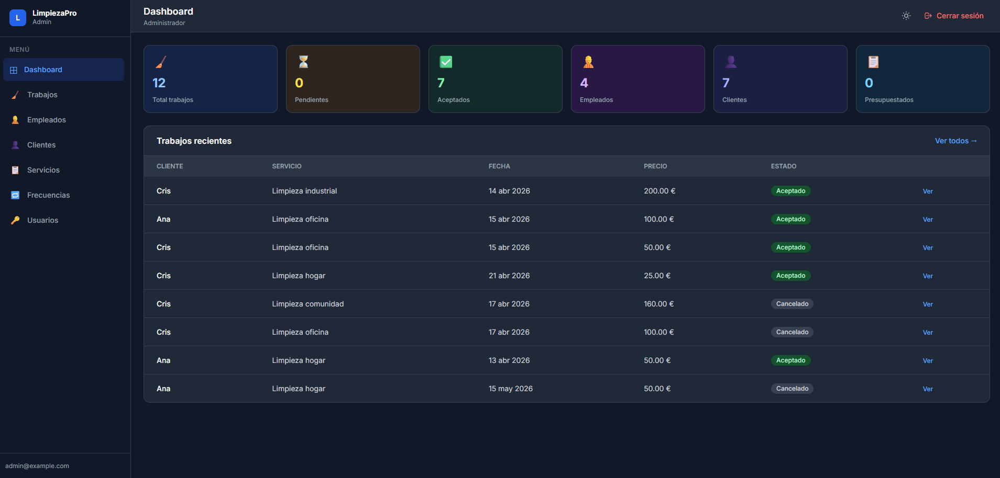
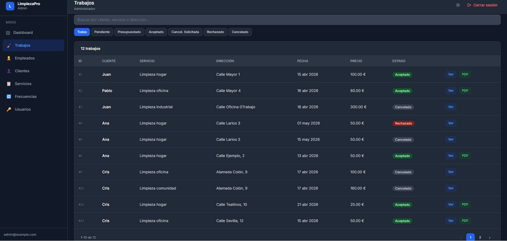
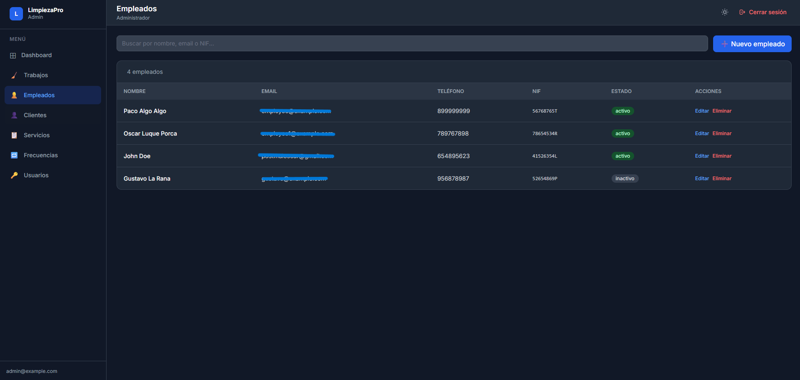
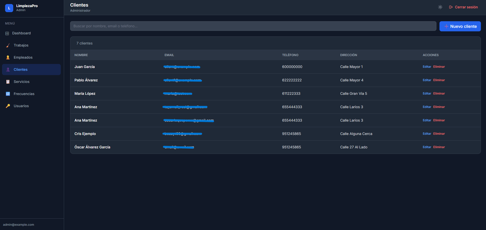
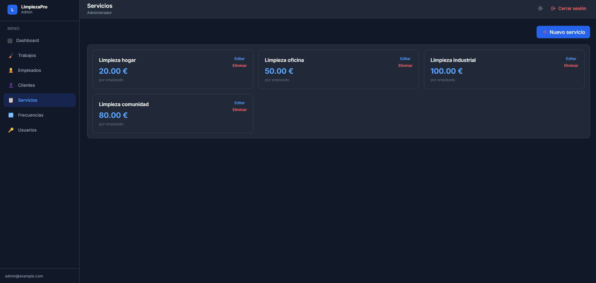
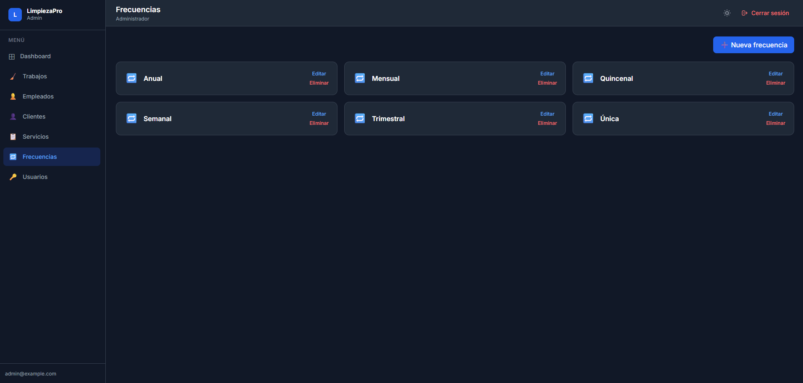
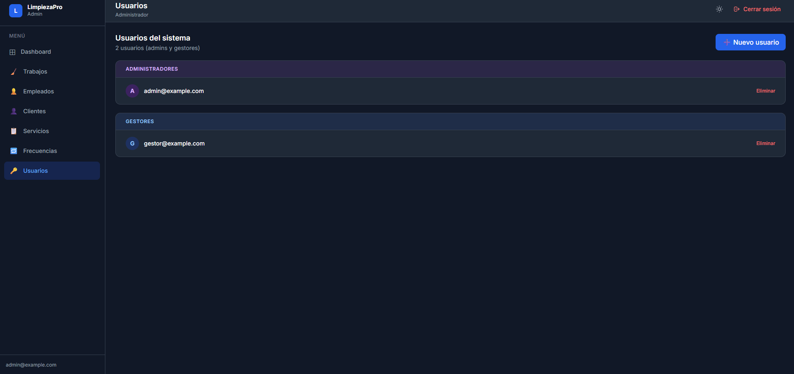

Limpieza Pro
Aplicación web fullstack para la gestión integral de una empresa de servicios de limpieza. Desarrollada con React y TypeScript en el frontend y Node.js con Express en el backend, es el proyecto más completo del portfolio. Incorpora autenticación con JWT, sistema de roles y permisos, gestión de trabajos con flujo de presupuestos, notificaciones por email automáticas, paginación y un panel diferenciado para clientes, empleados y administradores.
Tecnologías utilizadas
- Frontend: React, TypeScript, TailwindCSS
- Backend: Node.js, Express.js, TypeScript
- Base de datos: MySQL
- Otras: JWT, Nodemailer, node-cron, Swagger, bcrypt
Funcionalidades
Dashboard
La pantalla principal ofrece un resumen visual del estado de la aplicación, con indicadores clave sobre trabajos activos, clientes registrados y empleados disponibles, permitiendo al administrador tener una visión global del negocio de un vistazo.

Gestión de trabajos
El módulo de trabajos permite visualizar todos los servicios solicitados, con información sobre el cliente, tipo de servicio, frecuencia, estado y precio. Los administradores pueden asignar empleados y generar presupuestos directamente desde este listado.

Gestión de empleados
El módulo de empleados permite visualizar el listado completo del personal, con opciones para dar de alta nuevos empleados, editar sus datos y gestionar su disponibilidad. Cada empleado tiene acceso a su propio panel donde puede consultar los trabajos que tiene asignados.

Gestión de clientes
La aplicación incluye un módulo completo para la gestión de clientes, donde se puede consultar el listado de clientes registrados, sus datos de contacto y el historial de servicios contratados.

Gestión de servicios
Los administradores pueden gestionar los tipos de servicio disponibles, definiendo el nombre y precio base de cada uno. El precio final del trabajo se calcula automáticamente multiplicando el precio del servicio por el número de empleados asignados.

Gestión de frecuencias
El sistema permite configurar las frecuencias de servicio disponibles para los clientes al solicitar un trabajo, como servicios únicos, semanales, quincenales o mensuales, adaptándose a las necesidades de cada cliente.

Gestión de usuarios
El módulo de usuarios, accesible únicamente para administradores, permite gestionar las cuentas del personal interno de la empresa, asignando roles de administrador o gestor y controlando el acceso al sistema.
